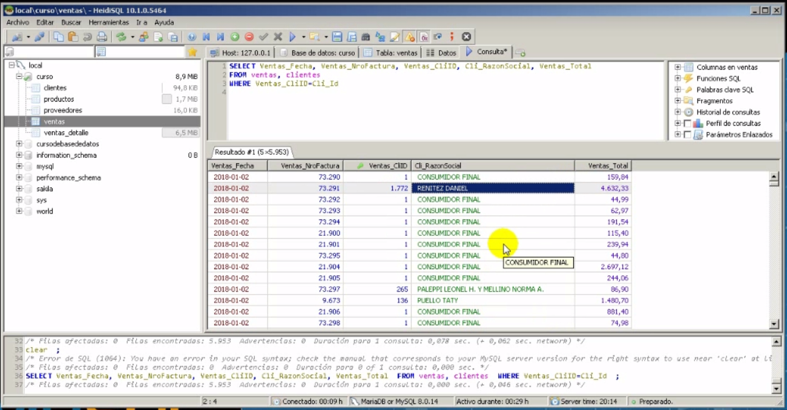
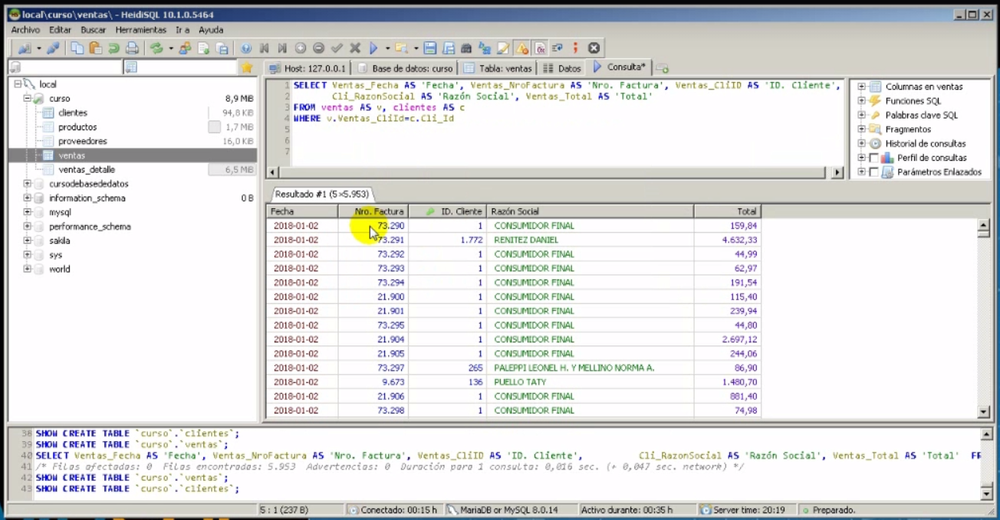
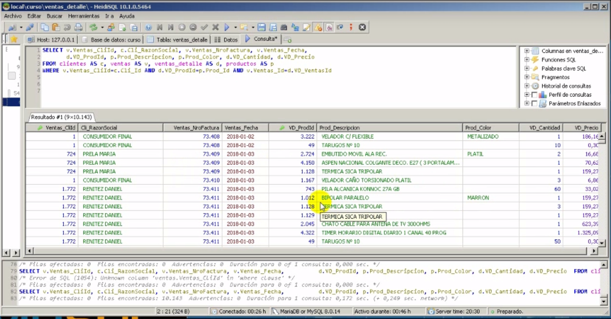
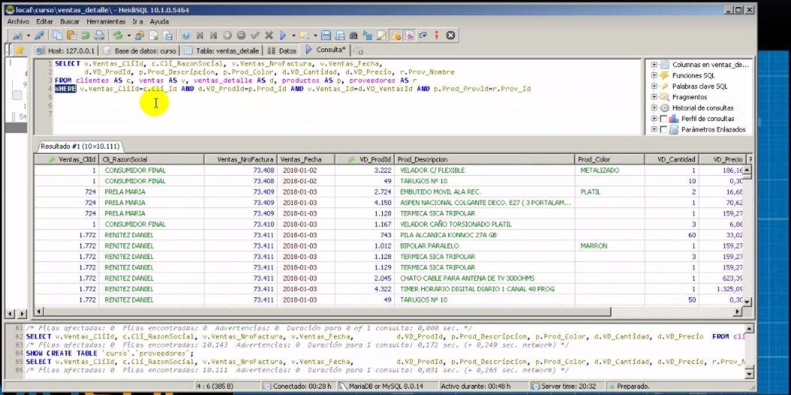

Union con la clausula where

Donde Ventas_Cliid=Cli_id es decir cada Venta se compare con el cliente id
Union con la clausula where con alias As

Ahora cada campo tiene un alias
Union de cuatro tablas con alias

- Se unen las cuatro tablas por el where y se les pone un alias, nota el alias se tiene que poner en los campos que se buscan
- Es decir ejemplo clientes as c --> cuando busque algo de clientes seria c.Cli_RazonSocial ejemplo
Union de cinco tablas con alias

- Se unen las cuatro tablas por el where y se les pone un alias, nota el alias se tiene que poner en los campos que se buscan
- En este ejemplo se agrega provedores as r y su union es p.Prod_Provid=r.Prov_id